Plotting
SigmaTau ships its plot recipes in a package extension (ext/SigmaTauRecipesBaseExt.jl). The extension loads automatically when RecipesBase is in the session — in practice, the moment you load Plots (or any other package that loads RecipesBase; a backend package alone, such as GR, does not). SigmaTau itself takes no plotting dependency, so headless batch analysis never pays for a graphics stack.
This page is a cookbook: each section is a recipe you can paste into the REPL.
Setup
using Plots, SigmaTauPlots defaults to the GR backend, which needs no extra installation. The recipes are backend-agnostic; the figures on this page are rendered through the docs build's backend (PGFPlotsX when a LaTeX engine is available, GR otherwise).
A single result
plot(result) on a StabilityResult draws the σ–τ curve as a line on log-log axes:
using Plots, SigmaTau, Random
Random.seed!(42)
# Synthetic record: WFM at σ_y(1 s) = 1e-12 plus RWFM at 3e-14,
# 8192 phase samples at τ₀ = 1 s — a fall-then-rise curve.
p = noise_gen(PhaseData, 8192, 1.0; sigma1 = Dict(0 => 1e-12, -2 => 3e-14))
r = adev(p)
plot(r)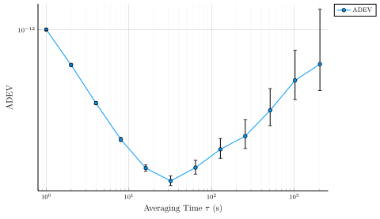
The recipe sets, as overridable defaults:
xscale = :log10,yscale = :log10,xlabel = "Averaging Time τ (s)",ylabeland legendlabelequal to the deviation name ("ADEV"here, taken fromresult.deviation_type),- circle markers at each computed τ (
markershape = :circle,markersize = 3), - ticks at integer powers of 10 spanning the data range on both axes, with major gridlines at the decades and fainter minor gridlines between (
minorgrid = true). Computing the tick positions from the data keeps a narrow-range axis on integer-decade labels instead of fractional powers like 10^2.5.
When the result carries confidence bounds (ci=true, the default), the recipe attaches asymmetric error bars: the lower offset is dev .- ci_lower(r) and the upper offset is ci_upper(r) .- dev, so each bar spans exactly [r.ci[i].lo, r.ci[i].hi]. The bars are asymmetric because the χ² confidence interval is asymmetric about the point estimate.
Every default yields to a standard Plots attribute passed at the call site — marker = :square changes the marker, marker = :none removes it, xticks = :auto restores backend tick selection. The one exception is the series type, which the recipe fixes to a line path — restyle with marker and line attributes rather than seriestype = :scatter:
plot(r; lw = 1.5, marker = :diamond, ms = 4,
title = "Overlapping Allan deviation", legend = :bottomleft)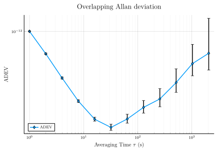
Confidence-interval styles
The recipe supports one custom attribute, ci_band:
| Call | CI rendering |
|---|---|
plot(r) | error bars (default) |
plot(r; ci_band = true) | filled band (ribbon) |
plot(adev(p; ci = false)) | none — the ci vector is empty |
plot(r; ci_band = true, fillalpha = 0.3)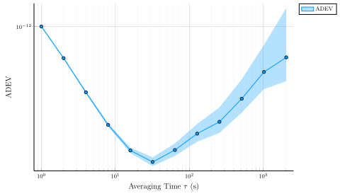
ci_band is consumed by the recipe, so it never reaches the backend as an unknown attribute. The band edges are ci_lower(r) and ci_upper(r), the same bounds the error bars span; only the rendering changes.
The result stores the bounds as one (lo, hi) tuple per τ in r.ci; the ci_lower / ci_upper accessor functions return them as plain vectors, so you can also draw them yourself when you want full control over the style:
plot(r.tau, r.dev;
xscale = :log10, yscale = :log10,
xlabel = "Averaging Time τ (s)", label = "ADEV")
plot!(r.tau, ci_lower(r); ls = :dot, color = :gray, label = "68.3 % CI")
plot!(r.tau, ci_upper(r); ls = :dot, color = :gray, label = "")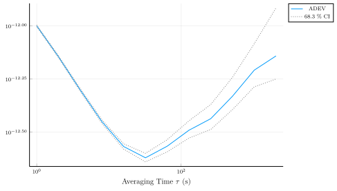
The default confidence level is DEFAULT_CONFIDENCE = 0.683 (1σ); pass confidence = 0.95 to the deviation call to widen the bounds. mtie has no published EDF model, so its results carry no CI and always plot as a bare curve.
Overlaying several deviations
plot(suite) on a StabilitySuite overlays every result on one set of axes, one labelled series per deviation, with the generic y-label "Deviation":
suite = stability(p) # :adev, :mdev, :hdev, :mhdev by default
plot(suite; legend = :bottomleft)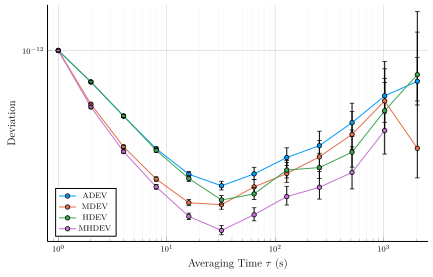
The default suite is all σy quantities (dimensionless fractional-frequency deviations), so the shared ordinate is unit-consistent. Time deviations such as tdev and htdev are σx quantities in seconds — request them explicitly and plot them on their own axes, e.g. plot(tdev(p)).
A Vector{StabilityResult} overlays the same way — useful for comparing clocks rather than deviations: plot([adev(p1), adev(p2)]). Both series then inherit the same default label ("ADEV"), so for clock comparisons the manual form with explicit labels is usually clearer:
p2 = noise_gen(PhaseData, 8192, 1.0; sigma1 = Dict(0 => 3e-12))
plot(adev(p); label = "clock A", legend = :bottomleft)
plot!(adev(p2); label = "clock B")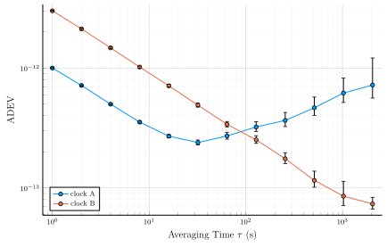
Every plot! call adds to the existing figure; the user-supplied label overrides the recipe's default.
Log-log conventions and slope guides
Because the log scales and the integer-decade ticks are recipe defaults, the usual Plots attributes restyle the axes. An explicit xticks vector replaces the default tick positions — here, labelling every other decade:
plot(r; xticks = 10.0 .^ (0:2:4),
xlabel = raw"\(\tau\) (s)", ylabel = raw"\(\sigma_y(\tau)\)",
legend = :bottomleft)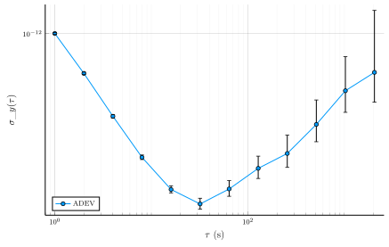
On log-log axes the slope of σy(τ) encodes the dominant noise type (Riley, Jul 2008); α is the spectral exponent of the fractional-frequency PSD, `Sy(f) ∝ f^α`:
| Noise type | α | ADEV slope |
|---|---|---|
White PM (:WHPM) | 2 | τ⁻¹ |
Flicker PM (:FLPM) | 1 | ≈ τ⁻¹ |
White FM (:WHFM) | 0 | τ^(−1/2) |
Flicker FM (:FLFM) | −1 | τ⁰ |
Random-walk FM (:RWFM) | −2 | τ^(+1/2) |
ADEV cannot separate white PM from flicker PM — both fall as roughly τ⁻¹ — which is one reason mdev (slope τ^(−3/2) under white PM) is computed alongside it.
A reference slope line is an ordinary series anchored at a point on the curve. For the τ^(−1/2) guide of white FM, anchored at the first point:
guide = r.dev[1] .* (r.tau ./ r.tau[1]) .^ (-1/2)
plot(r; legend = :bottomleft)
plot!(r.tau, guide; ls = :dash, color = :gray,
label = raw"\(\tau^{-1/2}\) (WHFM)")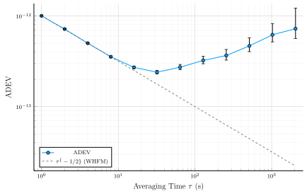
The synthetic record above follows the guide at short τ (the white-FM regime) and peels upward at long τ where the random-walk FM component takes over.
Spectral densities
The same extension plots SpectralResults from Sy, Sx, and L. S_y(f) and S_x(f) are power densities and render on log-log axes with the units in the y-label; ℒ(f) is already in dBc/Hz, so it gets a log frequency axis with a linear (dB) ordinate. The recipe drops the DC bin, which is undefined on a log frequency axis:
plot(Sy(p))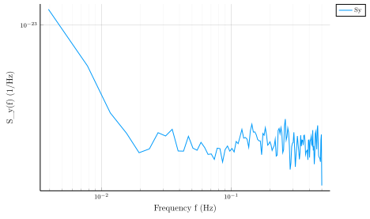
L needs the carrier frequency to convert from Sx: pass `fcarrier(in Hz) to theLcall itself, e.g.plot(L(p; f_carrier = 10e6))`.
Dynamic deviation maps
dadev and dhdev return a time-resolved σ(t, τ) map rather than a curve, and the recipe renders it two ways. The fixture here has a deliberate mid-record event — the white-FM level steps up 10× halfway through — which a static deviation would average over:
y_step = [randn(4096) .* 1e-11; randn(4096) .* 1e-10]
d = dadev(FrequencyData(y_step, 1.0), Octave; window = 2048, step = 1024)
plot(d)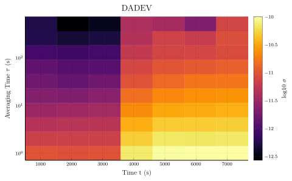
The default is a heatmap of log₁₀ σ over (t, τ); the step shows up as the color change at the right window-center times. Pass seriestype = :path3d for the dynamic-deviation presentation the literature uses: one σ(τ) curve per window time, stacked along the time axis as 3-D lines, so the event reads as the later curves lifting off the earlier ones:
plot(d; seriestype = :path3d, camera = (60, 25), legend = :topleft)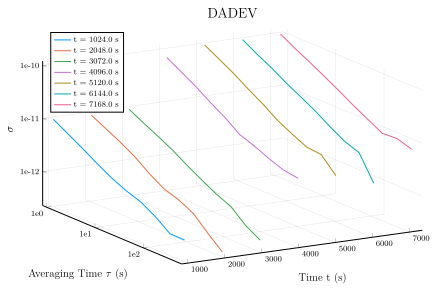
Three-dimensional axes in Plots do not support log scales, so the curves plot log₁₀(τ) and log₁₀(σ) as coordinates with the decade ticks labelled in plain 1e<k> form. Maps with more than eight windows suppress the per-curve legend (each curve is labelled by its window-center time); camera = (azimuth, elevation) rotates the view.
Publication export
size (pixels) and dpi are standard Plots attributes; savefig picks the format from the file extension. dpi affects only raster formats such as PNG — PDF and SVG are vector formats and ignore it:
fig = plot(r; ci_band = true, size = (800, 500), dpi = 300,
lw = 1.5, legend = :bottomleft)
savefig(fig, "adev.png") # raster, 300 dpi
savefig(fig, "adev.pdf") # vectorFor LaTeX documents, switch the backend to PGFPlotsX (Plots.pgfplotsx(), requires a TeX engine) and the figure fonts will match the surrounding text — this is what the docs build itself does.
Where to next
- Tutorial 2: Computing the Allan deviation — the recipe applied to a worked WPM + RWFM record.
- Tutorial 6: Three-cornered hat — a fully manual log-log plot for derived (non-
StabilityResult) quantities. - Theory: Overview — what the slopes mean physically.